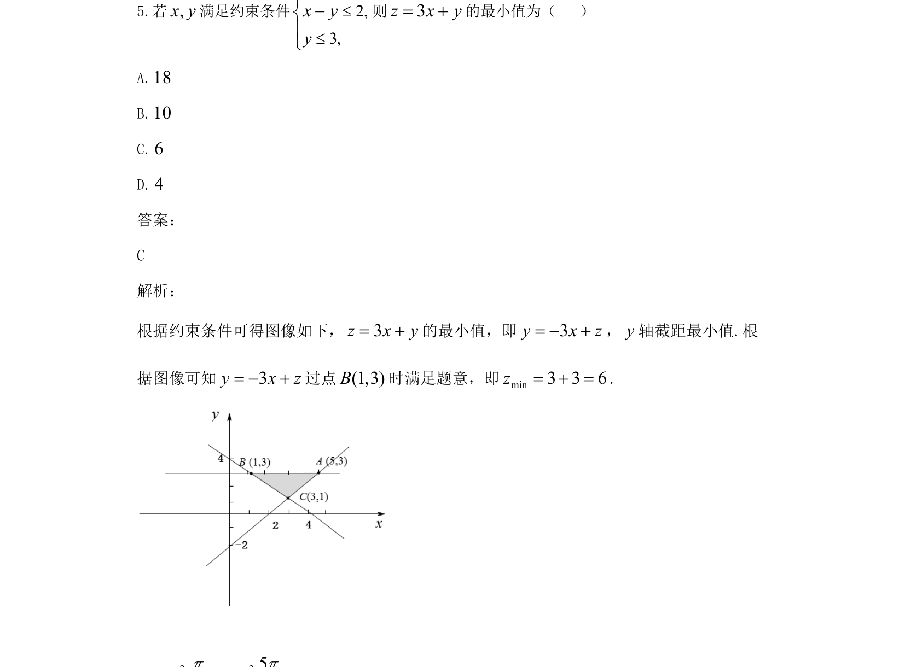
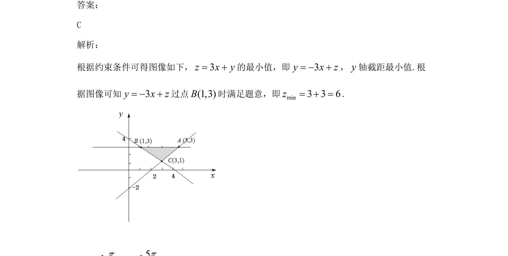

考点：线性规划 目标函数 截距

线性规划求目标函数最小值，利用截距几何意义求解

📄 原 PDF 第 3 页：
素材/真题/吉林/2008-2024·（吉林）数学高考真题/2021年高考数学试卷（文）（全国乙卷）（新课标Ⅰ）（解析卷）.pdf
5.若,x y满足约束条件2,3,4,yxyxy≤≤+³- 则3z x y= +的最小值为（ ） A.18 B.10 C.6 D.4 答案： C 解析： 根据约束条件可得图像如下，3z x y= +的最小值，即3y x z= - +，y轴截距最小值.根 据图像可知3y x z= - +过点(1,3)B时满足题意，即min3 3 6z= + =.